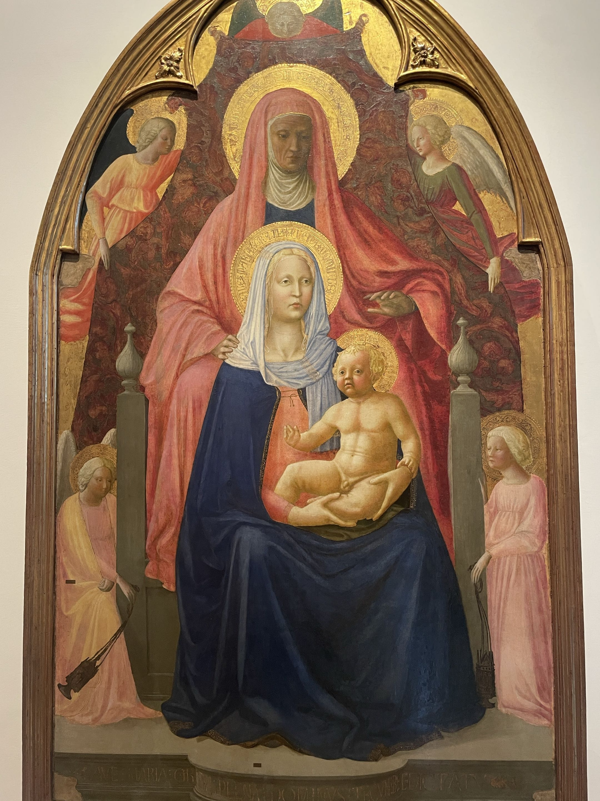
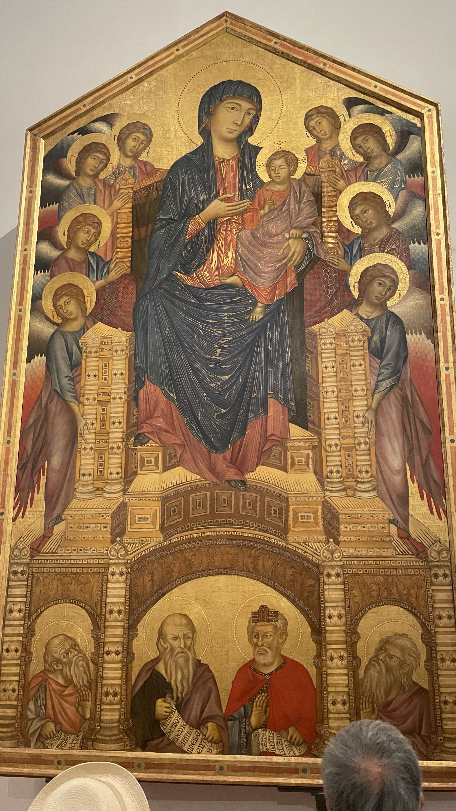
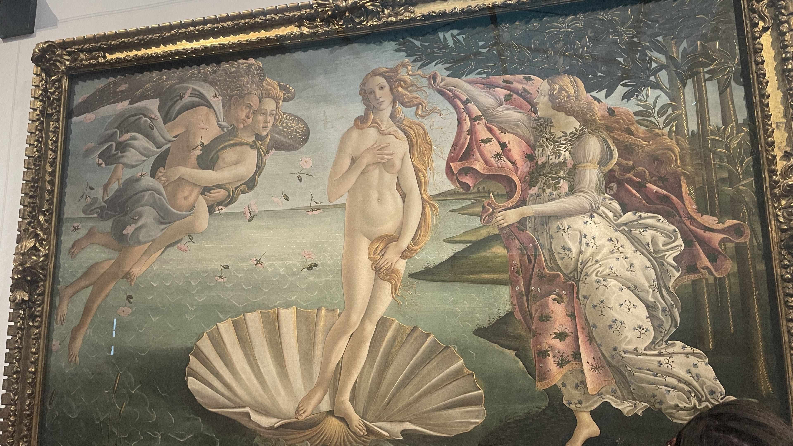
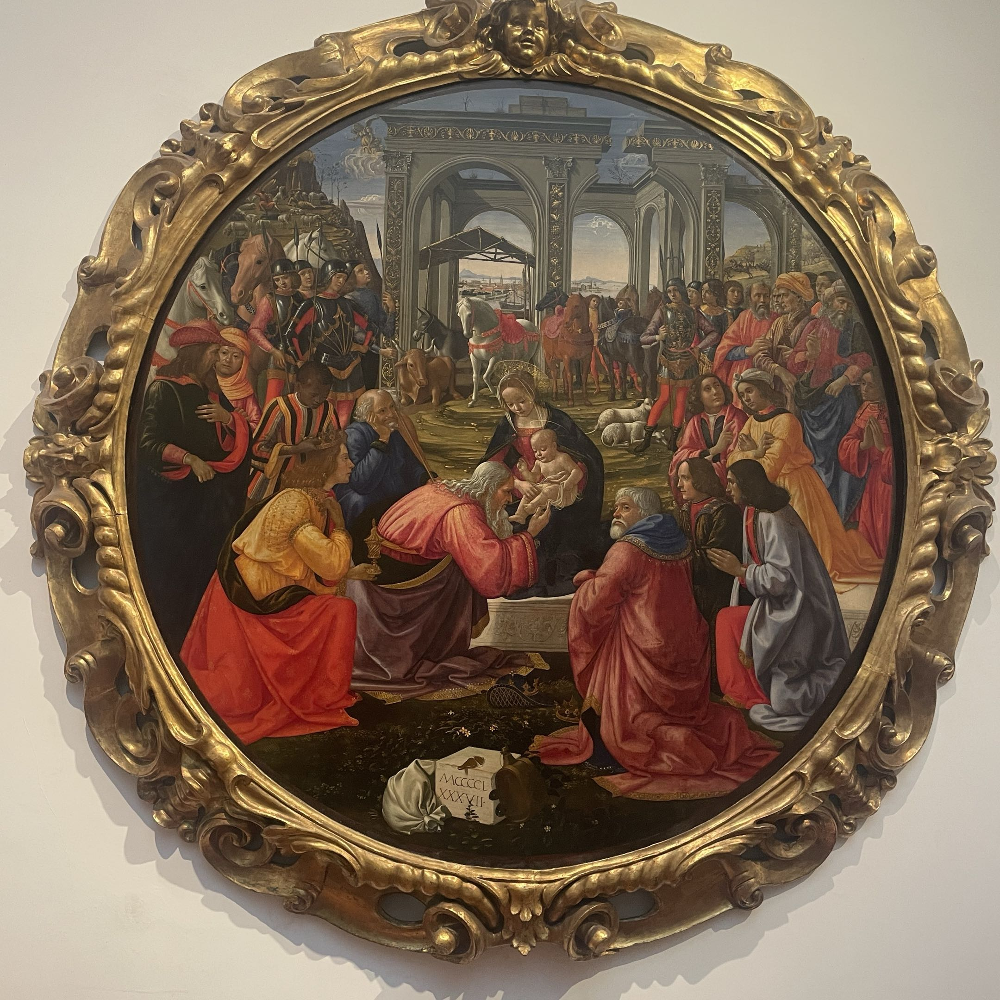

Dag 4
1: what we see, 2: light and shadows, 3: appolinsk eller dionysisk, 4: perspektiv, 5: interpretation
Billedet har en buet ramme med en flad base, samt fire krumme indhakninger på selve stykket. Maleriet har mange røde farver, med gul i kontrast og blå på Maria som er i midten.

Lyset kommer fra den venstre side og bliver mest koncentreret på menneskerne og englenes beklædning som folderne på deres tøj. Maleriet er appolinsk siden det følger en struktur og orden i selve billedets dynamik, som at ingen viser følelser klassisk i dionysisk kunst.
Der er flere lag i billedet som får Maria til at være stilt ud. Englene i baggrunden holder nu en rød farve op i baggrunden, hvor hver helgen har en gylden ring bag deres hoved.
Selve stykket står for at hylde Maria og hendes mirakel af at føde Jesus Kristus som en jomfru.

Rammen er en rektangel med en trekant på toppen, med engle på hver side der står symmetrisk overfor hinanden med Jomfru Maria med Jesus barnet i midten. Der er nogle gamle mænd under Maria og englene.
Lys kommer oppe fra som lyser nedad. Det kan ses på folkenes beklædning som afgiver en skygge. Selve stykket er appolinsk siden det bruger mange specifikke skille linjer inden for rammen som putter hvert gruppe af folk ind i deres organiseret boks.
Perspektivet på maleriet bruger form siden vi kan se Maria sidde på en tredimensionel trone, med de ældre mænd er i forgrunden og englene er i baggrunden.
Meningen med dette maleri kan vise hvordan aristokraterne nederst på stykket er under tronen af Jesus som Guds' søn, imens englene er der til at bære ham og Maria til deres guddommelige skæbne.

En rektangel som ramme med dekorationer i et uendeligt mønster. Maleriet har fire mennesker på en strand ved siden af en skov. Lyset kommer fra den højre side.
Stykket er dionysisk siden den har meget menneskelig bevægelse og baggrund som gør det uperfekt. Det stiller Venus ud som midtpunketet af maleriet, men putter ikke de andre ud af fokus.
Maleriet kan ses mere som en hyldest end et stykke med en dybere religiøs og esoterisk betydning.

Rammen på dette maleri er rundt og med mønster på. Billedet har mange mennesker og dyr på en plæne. Der kommer lys oppefra til venstre.
Billedet er dionysisk siden det har et stort menneske perspektiv og hver person har et ansigts udtryk.
Der er fokus på en kvinde og hendes barn som en gammel mand rører ved barnets fod imens folk ser på.
Det kan interpreteres som en hellig mand eller en slags Messias som er kendt nok til at have tilskuere når han udgør mirakler.
Spørgsmål:
Noterne her er kun fra kollektiv diskussion.
Hvad fangede os og hvorfor?
* Adoration of the Magi serien.
* The var fedt at der var et klar center i individer - som fx. en Medici eller Jesus - og hvordan de fremviste iveren for at se hvem end det er, som er fokusset af billedet.
Reflektion - rød tråd fra dengang til nu:
* Som vist i malerierne fra serien, var der en klar forgudelse af nogle individer, hvilket vi også ser i dag, bare på anderledes måder.
* Mens de havde Jesus, Medici familien og religiøse figure at fremhæve, er der endnu en tendens til at forgude folk med en høj social status - fra Trump til Kim Jong Il til Gagwan Shrii Rashneesh/Osho.
* Mennesker har altid haft en tendens til at forgude eller idealisere individer med høj social status. Både dengang og nu. Dengang var det oftere religiøse figure. Nu er det ofte influencers. I begge tider var det venner, forældre, læremestre og andre lignende figure, som kunne have eftertragtede færdigheder.
drawing of the skyline over Firance